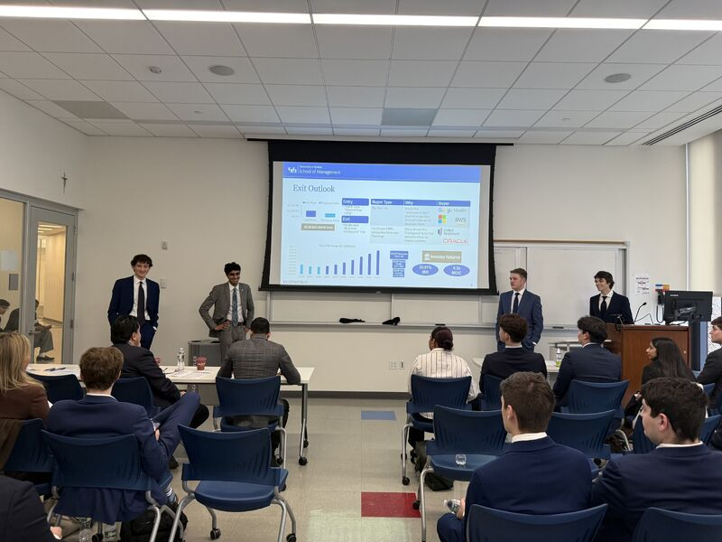
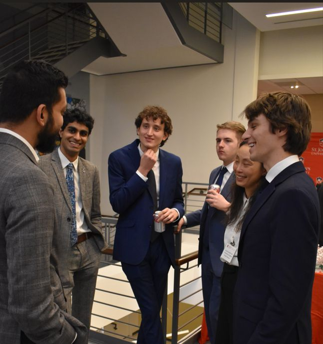
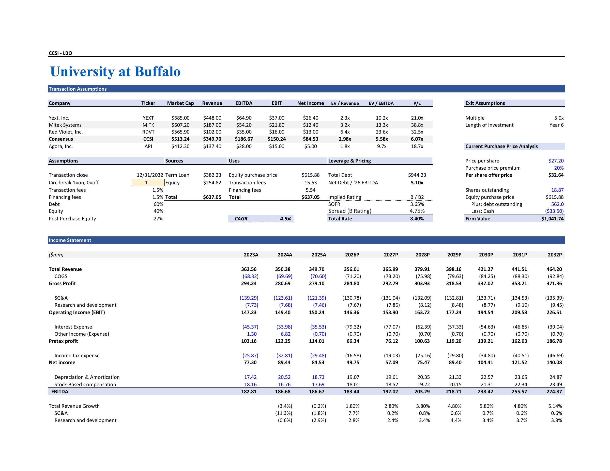

St. John’s Private Equity Competition
THESIS
Fax still matters in healthcare. Our case for CCSI centered on recurring revenue, high switching costs, and durable cash flow—with potential upside in the intelligence layer built on its healthcare communication network.
WORK
Built the integrated LBO model and interviewed the company’s CEO to pressure-test operating assumptions and investment risks.
OUTCOME
Our investment case underwrote a 33.8% IRR and 4.3× MOIC over six years.
CASE ASSUMPTIONS
Recurring revenue, customer retention, cash generation, debt repayment, and exit valuation drove the six-year underwriting. Returns represent modeled case outcomes.
FEATURED SLIDES
SLIDES 2, 3, 5 & 8

THE LBO MODEL
OPEN MODEL PDF ↗
Integrated model · 6-year holding period · 4-page PDF